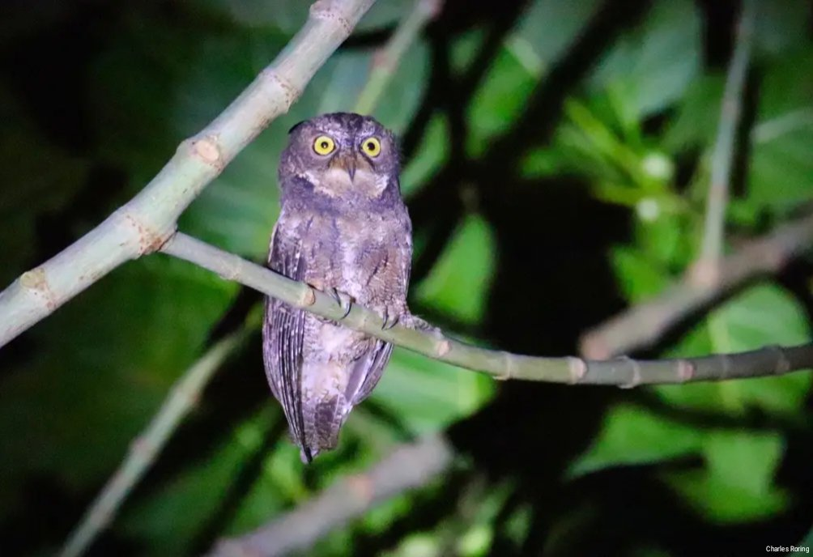

Sonder is a small district town in Minahasa regency of the North Sulawesi Province of Indonesia. The capital of the province is Manado city. It takes around 1 hour 45 minutes to drive from the airport of Manado to Sonder town.
It is a great destination for tourists who love nature and are interested in wildlife especially birds and butterflies. The inhabitants of the town work as farmers, shop owners, government workers and car drivers.
In the past, Sonder was famous for its spice commodity especially clove. Now the farmers have diversified their agricultural produce. They grow tomatoes, cabbage, banana, papaya, corn, vanilla and etc.
The first place which visitors can easily reach is the Tounelet forest. It is located in the middle of Sonder. Walking down the slope of Tounelet village near Siloam Hospital, tourists could watch Sooty-headed Bulbul, Slender-billed Crow, Yellow-sided Flowerpecker, Gray-sided Flowerpecker, Sulawesi Hanging Parrot, Brush Cuckoo, Chestnut Munia, Scaly-breasted Munia. Sometimes, Grey-cheeked Green Pigeon, Sulawesi Cuckoo-dove (Macropygia albicapilla), and Black-naped Oriole (Oriolus chinensis) land on the branches of the trees in that small Tounelet forest.

People in Sonder have trees at the front, side and backyard of their houses. They attract small birds such as Sahul Sunbird, Brown-throated Sunbird, Black-crowned White-eye, Sulawesi Hanging Parrot, Pale Blue Monarch and Collared Kingfisher. Walking around the alleyways of Sonder will allow visitors to see those birds.
As we walk further to the outskirts of Sonder town, we will pass by houses of farmers, poultry and pig farm areas as well as fish ponds and rice fields.
More birds could be seen outside the town, in hill farmland and paddy field areas we could watch Hair-crested (White-eye) Drongo, Black-naped Fruit Dove, Black-naped Oriole, Slender-billed Crow, White-breasted Woodswallow, Collared Kingfisher, Cattle Egret, Little Egret, Purple Heron, White-browed Crake, Cinnamon Bittern, Sunda Teal, Barn Swallow, White-nest Swiftlet, and etc.
In the south of Sonder, government built asphalt paved road which is a great site for birding walk. There, we could watch birds such as Zebra Dove, Yellow-sided Flowerpecker, Sulawesi Hanging Parrot, Sulawesi Cuckoo Dove, Finch-billed Myna and Sahul Sunbird and Brown-throated Sunbird, Collared Kingfisher, Barred Rail and Eastern Yellow Wagtail.

More interesting birds could be watched in the hill forest of Sonder. They include Mountain White Eye, White-faced Cuckoo-dove, Sulawesi Cuckoo Dove, Sulawesi Pygmy Woodpecker, and Sulawesi Blue Flycatcher, Black-faced Munia, Crimson Sunbird and a lot more.

Birding in the mountain forest could be done at around 06:30. Earlier than that, fog still covers the canopy of the forest.
Minahasa highland is a region in the Province of North Sulawesi of Indonesia. To visit it, tourists need to fly from their country to Manado city. There are direct flights from Guangzhou of China, and from Singapore to Manado city. For domestic flights to major cities in Indonesia such as Jakarta, Surabaya, Denpasar, Makassar, Balikpapan and Sorong, the flights are available everyday and are served by such airlines as Garuda, Citilink, Batik Air, Lion Air and TransNusa.

If you are interested in taking a birding and wildlife watching tour in, please, contact me (Charles Roring) by e-mail to: peace4wp@gmail.com or by whatsapp: +6281332245180

Sorong is a city in South West Papua Province of Indonesia. It has become the entrance gate for visitors who want to go to Raja Ampat and Tambrauw regency.
The mangrove forest of Sorong is the habitat of Brown-backed Honeyeater, Orange-fronted Fruit Dove, Willie Wagtail, White-bellied Cuckooshrike, Sacred Kingfisher, Oriental Dollarbird, Common Plover, White-breasted Woodswallow, Blue-black Kingfisher, Nankeen Night Heron, and a lot more.
As a matter of fact, Sorong regency has got significant area of lowland rainforest that is the natural habitat of birds, marsupials, butterflies and various unique plants. If we go further to remote areas, we will be able to watch more birds and other wildlife including birds of paradise.
The birding tour in Sorong's forest can be combined with tour to other areas in Raja Ampat where participants can watch Beach Kingfisher, Sacred Kingfisher, Moustached Treeswift, Rufous-bellied Kookaburra, Whimbrel, Spice Imperial Pigeon, Eclectus Parrot, Palm Cockatoo, Sulphur-crested Cockatoo, Olive-backed Sunbird, Black Sumbird, Papuan Black Myzomela, Great-billed Parrot, Striated Heron, Osprey and etc.
Malagufuk Forest
There is a forest area outside Sorong that I have promoted as a birding destination. It is called Malagufuk forest. It is located in the east of Sorong around 1.5 hours by 4WD car and another 1.5 hours walk into the jungle. There is a small hut in the middle of the jungle for visitors who want to watch birds and other wild animals and plants of New Guinea.
The tropical rainforest in Malagufuk is the natural habitat of various species of birds. Some of them are listed below:
In addition to watching Birds of Paradise, visitors can also do night walk in the jungle to watch wallaby. It is a nocturnal marsupial animal that looks like kangaroo but smaller.
Every day, there are regular flights between Sorong and some major cities in Indonesia such as Jakarta, Makassar, Manado, Ambon, Jayapura and Manokwari.
Garuda Indonesia, Lion Air, Batik Air, and Sriwijaya Air have got daily flight service to Sorong city. Most visitors fly to this city and then continue their trip by fast passenger ferry from Pelabuhan Rakyat in Sorong city to Waisai harbor in Waigeo island. By smaller speed boats, they will continue their trip by traveling around such islands as Kri, Mansuar, Gam, Fam and Wayag. They travel by boats to enjoy snorkeling, scuba diving and seeing beautiful marine landscape of Raja Ampat. Most visitors stay for 5 or 7 days up to 2 weeks in Raja Ampat. Most tourists think that Sorong is only a transit point.